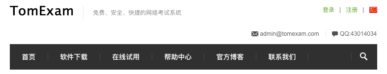
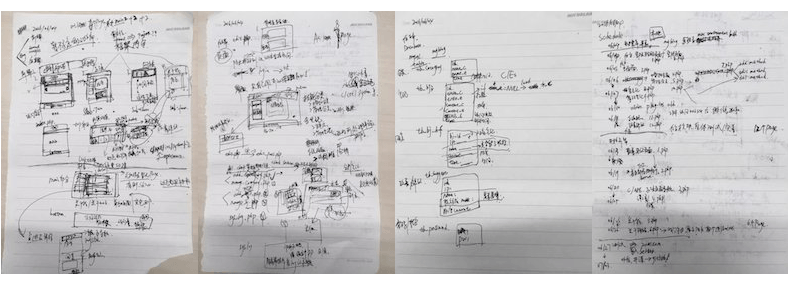

从web零基础到完成这个博客系统
最开始接触Web是在15年的11月份，到现在快1年了。现在一般需求的小网站应该可以独立完成，其间遇到了很多问题，也学了很多东西。但我这个人很健忘，东西学的快也忘的快，于是就想用博客来记录所学。以方便查找，也为后来的人提供一些经验。

我是怎么入坑的
15年11月，我们Team leader想做一个考试系统。就在网上找了一个免费的考试系统TomExam让我们随便改改。但当时我只会一点C、APUE，网页从来没接触过。同事Curtis之前会点前端，但忘的差不多了。当时部门会写点代码还有空闲时间的就只有我们两个，任务就这样交给我们了。当时在选择后台语言时我问了下搞java的一个同学，了解到php可能要简单一点，上手快。于是跟老板商量，可不可以用php写，但老板说他会一点jsp，就用jsp吧。最重要的原因可能是因为免费考试系统源码是用jsp写的，想着改改就直接用，就这样入坑jsp/servlet。刚拿到项目都不知道网站具体是怎么运行起来的，于是开始学习怎么让这程序运行起来: 装java环境、tomcat、mysql等。起初是在windows环境，由于办公电脑都是mac mini，最后又在mac下部署了环境，运行了起来。在菜鸟教程上发了大概1个星期看了html、css、js相关的语法，并做了笔记，对基本的前端页面有了一点了解。后来看源码发现调用后台的方法基本都是servlet，且都是编译过后的class文件，也就意味着后端代码不开源，然后就萌生了重写后端的想法。Eclipse环境真正搭建起来是在一个月后(之所以选择eclipse开发环境，是因为网上教程只找到eclipse的)，期间也看了点jsp的资料。在书上看了mysql的基本语法，并做了笔记。以前总是以为数据库很难，但真正了解mysql，只用了半天时间。环境搭建好之后，就开始写代码了，这也是一切问题的开始。
从一个个问题开始
最先开始写的是登录界面，怎么给出输入账号密码的输入框？怎么弄出登录的按钮？按下登录按钮之后怎么去判断密码是否正确，正确了又怎么跳转？密码错误怎么提示？带着一个有一个的问题开始一步步开始去摸索。然后慢慢的对js+css+mysql+jsp熟悉了, 其实只要知道html基本语法以及数据库的调用，基本就没什么大的问题了。遇到不懂得直接百度，多思考一般都可以解决。就这样根据前端源码，以及数据表，用jsp 100%重写了这个考试系统。我们改名为TDE网络考试系统，之后又弄了单态登录，权限控制，文件服务系统，新闻发布，评论系统等。刚开始其实前端都没怎么改，我也没精力去弄，之后部门师姐司徒学了css+html用bootstrap改写了所有前端界面。后来我也开始用bootstrap了，包括这个博客系统。TDE网络考试系统完成之后，我基本对前端后端都有了一定的了解。这个过程看似很轻松，其实当真正遇到问题，还没找到解决方法时，那段时间是很纠结的，但找到解决方法的时候会很有成就感，然后又开始觉得这很简单，也没什么。
另一个项目
考试系统OK之后我也从大Foxconn转正了。由于CoreOS部门成立，Station方面的事情就开始多了。期间自学过OC、PHP，复习了C，APUE。但工作方面的事，总是会打乱学习的进度。前段时间老板决定开始为备品室斌哥家修改AMS系统，当时Martin还在(专业java网页后端，是我写完考试系统之后他才来的)，当时就是我和他负责这个系统，这个系统源码是php写的。都不会php，还是决定用jsp/servlet重写后端。后来才知道dao，servlet，将每一个数据表弄成java class，其实我个人对java还是很排斥的，但确实比我之前纯jsp好了很多，他负责规划数据库dao，写入库，借领，出库等，我负责查询模块，刚开始脱离jsp用servlet还是很不习惯的，但还是逼着自己用servlet+jstl，慢慢的也就习惯了。在我快写完查询模块时，CoreOS的事开始变多了，Burnin的Panic，UI lab的Audit等。那段时间基本没有写代码，全部交给了martin去做。Martin基本写完了那个系统就离职了，然后AMS系统又交到了我手上，我没怎么看就发给了斌哥他们测试，结果出了一些问题，让我们改，当时我忙Station的事情，根本管不了AMS的事情，就拖了一段时间。大家弄得不怎么愉快，忙完之后我终于有时间来解决ams的问题了，然后我发现一段时间没弄基本都忘了，这也是我为什么要离职的原因，我不喜欢这种状态，花时间学了东西，弄一下其他事情又忘了，断断续续的，提升很慢。于是我有了离职的想法，找老板谈了我的想法，讨价还价后，决定将AMS系统交接给备品室再走, 于是我基本重写了整个AMS系统。
为什么要重写，之前不是OK了吗?第一个原因是IE8的兼容问题，我们调试都是safari，但他们系统都是xp或win7的，出于正版的原因，只能用IE8，placeholder都不支持。还有就是前端基本没变，跟以前一样low，于是我将整个前端改了一遍，让界面整体上有了一个提升，期间才了解IE8不支持jQuery2.x以上的版本，不支持css3，html5等，最后找到了IE8使用css3的一个插件，弄出了input/button/table的圆角效果，不然input框总是感觉很low。第二个原因是相比原来的没什么改进，于是我对整个现有库存信息进行了唯一性分析，思考通过什么属性来确定一个物品，怎么去借领，归还等。他们让我们修改的主要原因是数据方面有异常的问题，最后改了一些逻辑，调整了数据表的一些结构，对影响的一些数据进行了修改，删除等。然后对mysql的一些稍微高级的用法有了一定的加强。期间js+css等也得到了强化，自学了用json来传递前后端的数据。IE8是个大坑，在文件上传时，我们隐藏了input file框，用另一个button来间接点击input file框，但用ajaxfileupload时，IE8不支持这个间接的调用，网上说可以将两个框重叠，但不会。low就low吧，直接不隐藏用input file，这个问题当时纠结了好久。还有个JS问题, 遍历chexbox多选框时，得到了数组遍历时有问题,for (i in list) IE8不支持，改成 for (var i = 0; i < list.length; i++) 才行，关键是JS脚本语言不报错，有问题只能用alert(变量)，不停的换地方调试，才能找到是哪里出的问题。改这个系统还算比较顺利，没有什么大的问题，主要得归功于Martin将我基本不会的都弄了相应的接口，直接按照他写的方式来弄就行了。比如文件的上传，execl的导入导出等。做完这个系统，感觉成长很快，又学到了很多东西。

开始写博客
技术上有了一定的积累就开始考虑做个博客系统了。起初因为我们写的系统都是局域网内部的，对真正的web运营不怎么了解，于是查了很多资料，注册了zuo11.com这个域名，又弄了个虚拟主机。刚接触虚拟主机时很不习惯，感觉束手束脚的，后来就习惯了，之前主机公园的系统支持安装wordpress，但感觉体现不出技术，自己写个后台也没什么难度，于是列出了Schedule。原先准备用php完整的写出这个博客系统，但时间有限，没时间系统的学php，就换回jsp了。后来发现主机公园的虚拟主机没有tomcat环境，就换成了阿里云的ECS。之前后台用jsp实现了。感觉low了，就用servlet重构了。博客的数据量相比考试系统，ams显得非常小。后台没什么，前端怎么显示的好看，浏览器的兼容等，花了不少心思。而且博客的维护是一个长期的过程，以后还需要不断的完善，优化。
The End
写完这3个系统之后，虽然进步了很多，但这不算什么。还只是业余水平，没有大项目经验。但我也不打算将web作为工作，只想作为一个爱好，以后有机会会看看freecodecamp上面的内容，慢慢提升.....